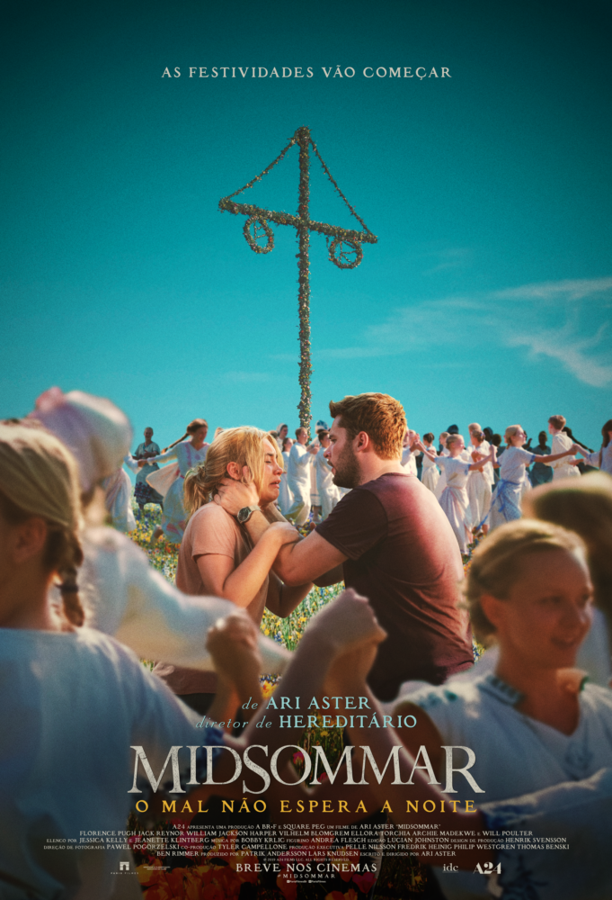
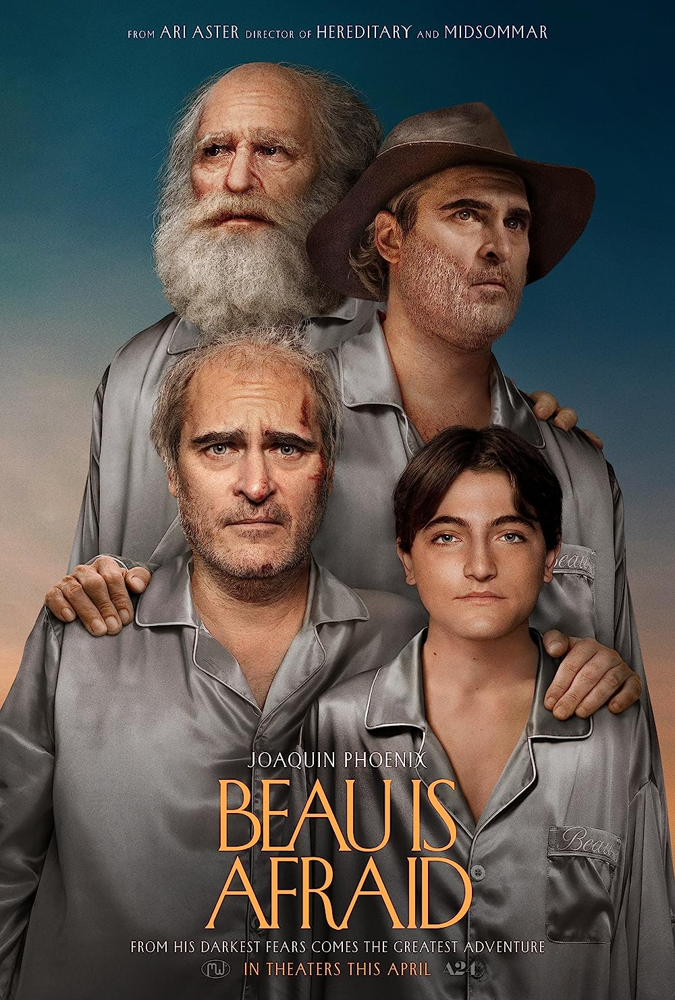

Sobre o diretor
Ari Aster (nascido em 15 de julho de 1986) é um cineasta americano. Suas marcas registradas eram notáveis pela combinação de horror e humor negro e representações perturbadoras de violência explícita ; mais conhecido por sua filmografia A24 composta por Hereditário (2018), Midsommar (2019) e Beau Is Afraid (2023).
Aster fez sua estreia na direção de longas-metragens quando escreveu e dirigiu o filme de drama de terror Hereditário (2018), que segue uma família assombrada por uma presença misteriosa após a morte de sua avó secreta. O filme estreou na seção Midnight do Festival de Cinema de Sundance daquele ano ,e foi lançado nos cinemas nos Estados Unidos em 8 de junho.Foi aclamado pela crítica, com a atuação de Toni Collette recebendo elogios especiais, e foi um sucesso comercial; arrecadou mais de US$ 80 milhões com um orçamento de US$ 10 milhões, tornando-se o filme de maior bilheteria da A24 em todo o mundo.Peter Travers escreveu em Rolling Stone que foi “o filme mais assustador de 2018”.

- 
- 